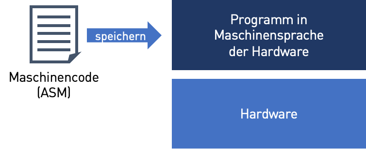
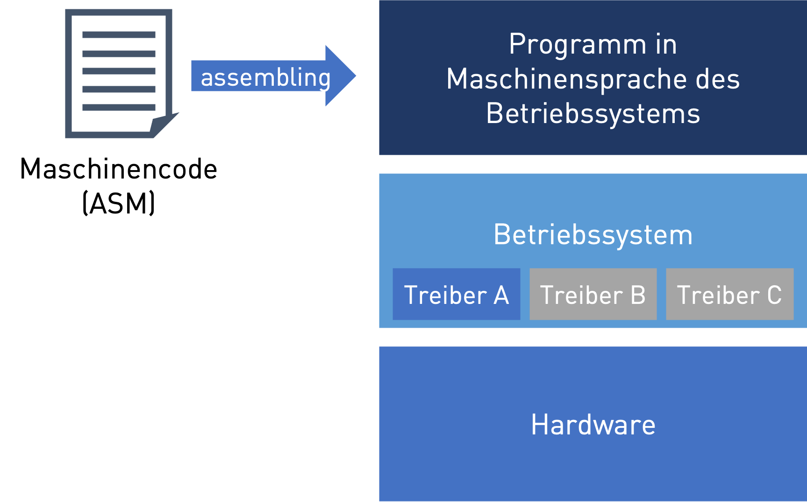
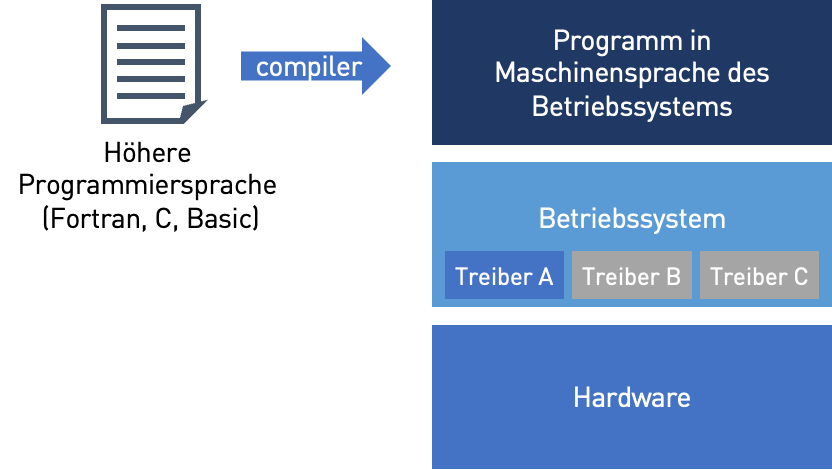
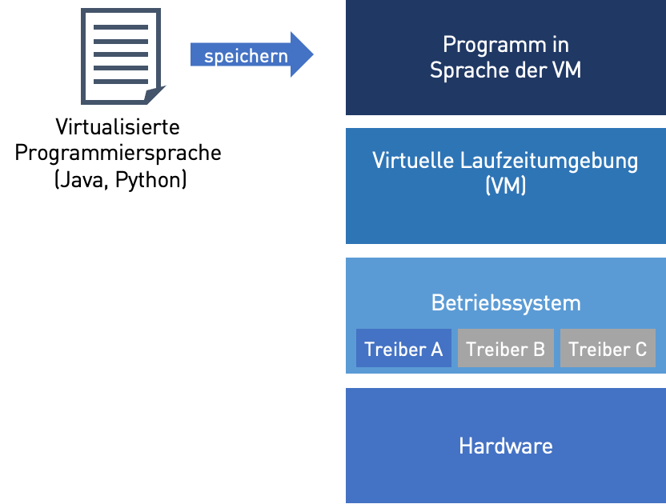
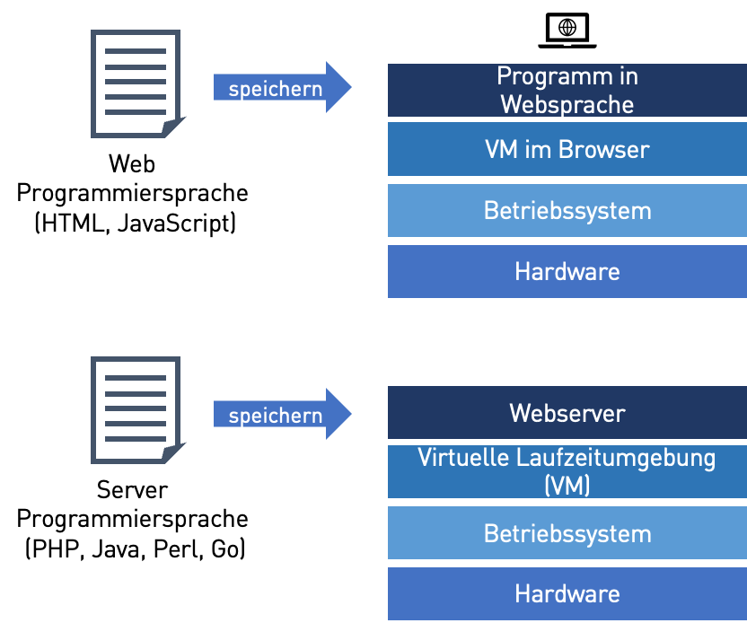
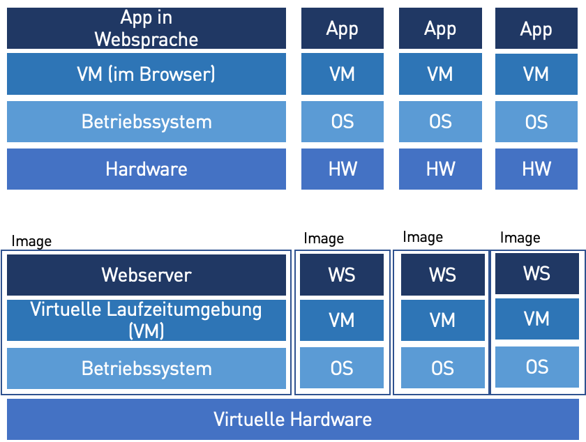
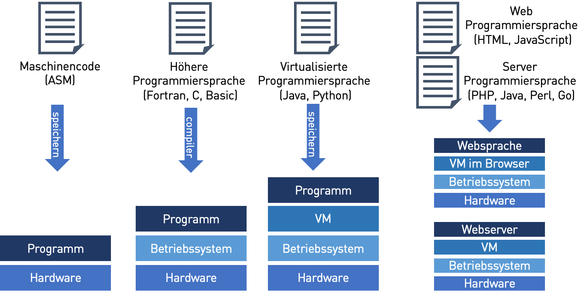

Softwarearchitekturen#
Über die Jahre haben sich die Softwarearchitekturen den modernen Anforderungen angepasst. Dadurch haben sich auch neue Programmiersprachen und Softwarearchitekturen entwickelt.
Monolithische, Maschinennahe Software vor 1950#
Die ersten Programme wurden direkt in Maschinencode geschrieben.

Warning
Wenn die Hardware sich geändert hat und eine neue Maschinensprache gesprochen wurde so mussten Programme angepasst oder neu geschrieben werden.
Aufteilung in Betriebssysteme und Monolithische Software seit 1960#
Betriebssysteme wurden eingeführt um Standardaufgaben zu erfüllen und die Hardware zu abstrahieren. Dies geschieht durch hardwarespezifische Treiber.
Wenn sich die Hardware ändert, so wird dies mit neuen Treibern unterstützt. Das Programm muss nicht angepasst werden.

Warning
Problem: Die Programme sind sehr schwer zu schreiben, weil sie sehr gutes Verständnis der Hardware erfordern.
Entwicklung von höheren Programmiersprachen 1970#
Um die Programmierung zu vereinfachen, wurden ‘natürlichsprachlicher’ höhere Programmiersprachen eingeführt. Sie müssen mit Compilern in Maschinensprache übersetzt werden.

Warning
Problem: Wenn sich die Betriebssysteme ändern, so funktionieren Programme nicht und müssen entweder neu Kompiliert werden oder umgeschrieben werden.
Virtualisierung Monolithischer Software seit 1995#
Virtuelle Laufzeitumgebungen abstrahieren die Betriebssysteme und compilieren Code in Echtzeit (Java) oder interpretieren ihn (Python)

Warning
Problem: Mit dem Internet entwickelte sich der Bedarf nicht nur Text und Bilder zu teilen, sondern auch Inhalte auf Webseiten dynamisch anzupassen und kleinere (bis größere) Programme auszuführen. Um von verschiedenen Geräten auf die Daten zuzugreifen, braucht man einen zentralen Punkt um die Daten zu speichern und komplexere Berechnungen auszuführen.
Verteilte, Virtualisierte Software im Internet seit 2000#
Frontend Webseiten visualisieren die Inhalte und interagieren mit den Nutzern. Leichte Berechnungen werden hier gemacht werden.
Backend Webserver stellen die Webseiten zur Verfügung und verwalten die Langzeitdaten in Datenbanken.

Warning
Problem: Im Internet greifen oft sehr viele Nutzer gleichzeitig auf die gleichen Server (Seiten) zu. Um diese nicht zu überlasten, brauchte man Wege diese bei Bedarf schnell zu duplizieren. Mit der Entwicklung von mobilen Geräten (Smart Phones, Tablets, etc.) gab es immer mehr relativ kleine spezialisierte Anwendungen (Apps) Hier kann der Bedarf an Rechenkapazitäten dynamisch schnell wachsen und man benötigte auch dynamisch skallierbare Server.
Verteilte, Virtualisierte Apps und Cloud Software seit den 2010#
Apps und Websites lösen vollständig traditionelle monolithische Programme ab. Sie laufen nicht mehr vollständig auf einem einzigen Computer, sondern haben Benutzeroberflächen auf mobilen Geräten und die Daten in der Cloud.
Um Webserver und Berechnungen in der Cloud besser zu skalieren, bündelt man Programme mit dem Betriebssystem in Images und virtualisiert Hardware. Dadurch kann man sehr schnell Programme mit dem kompletten Betriebssystem auf vielen Rechnern verteilen.

Klassifikation der Programmiersprachen nach historischer Anwendung#
Entsprechend der Entwicklung der Softwarearchitekturen haben sich auch unterschiedliche Programmiersprachen entwickelt die in der folgenden Abbildung dargestellt werden.
